Windows 10 Technical Preview Build 9926 のタブレットモード
公開日：
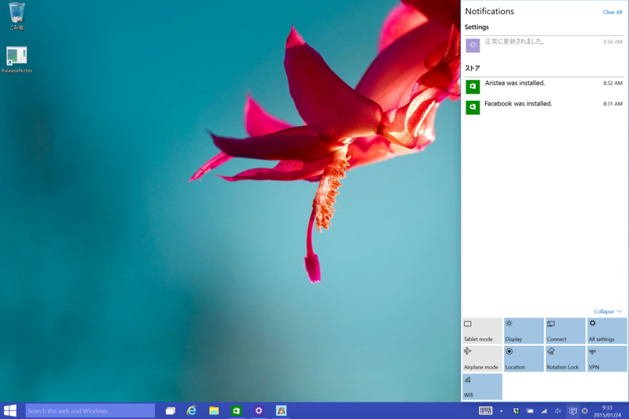
スクリーンを右から左方向へスワイプする（Windows 8 ではチャームに割り当てられていた操作）と、“アクションセンター”（Windows 10 で新設）があらわれる。この下、左端に［Tablet mode］ボタンがあり、デスクトップモード（？）とタブレットモードの切り替えができるようになっている*1。
Surface Pro 3 でキーボードを取り外したら自動でタブレットモードへ切り替わる、なんていう挙動を期待してしまったのだけど、今のところ、少なくとも自分の環境では動作しない。
Tablet mode OFF
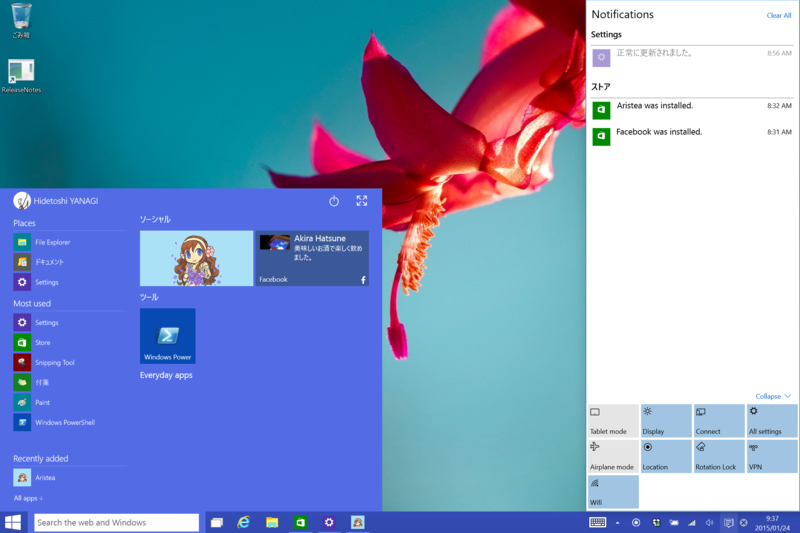
- デスクトップが明るく
- 検索ボタンがテキストボックススタイルに
- スタートメニュー（全画面表示にすることも可能）
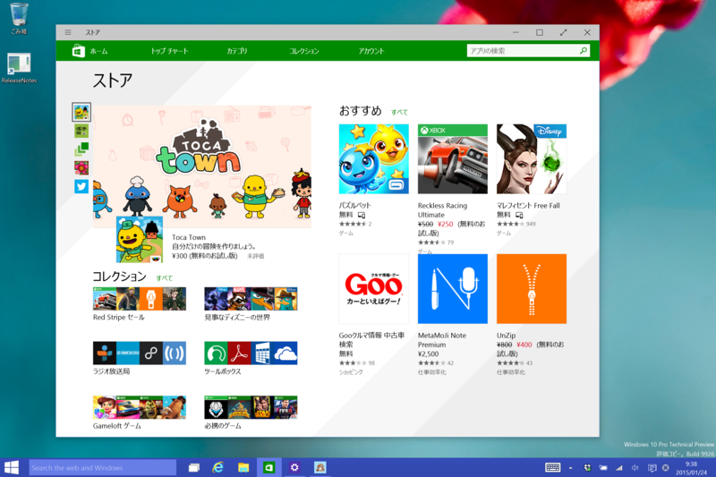
- ストア アプリは Windowed モードに
- ソフトウェアキーボードは手動表示
Tablet mode ON
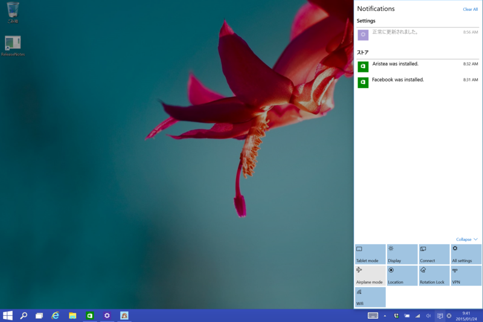
- （デスクトップを表示した状態で ON にすると）デスクトップが暗転
- 検索テキストボックスが消え、ボタンスタイルに
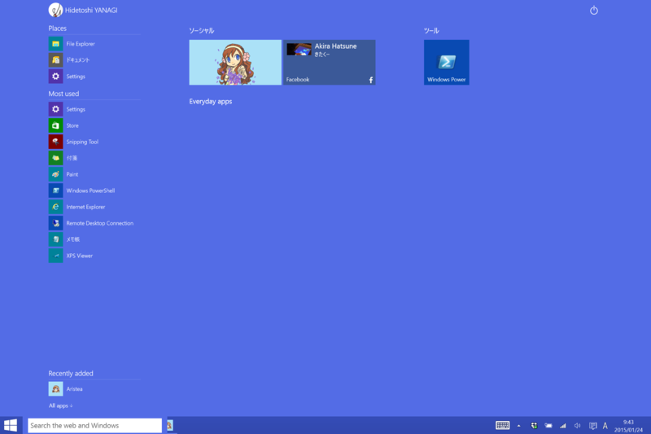
- スタート画面
- 検索ボタンは再びテキストボックススタイルに
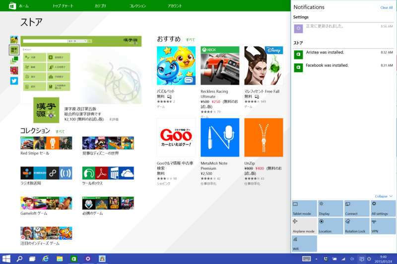
- ストア アプリは Full screen モードに
- 切り替えを繰り返してると Windowed モードに戻った際にタイトルバーが消えて困る
- タスクバーは消えない（しかも不透明）
- 共有チャームはタッチ操作でどうやって出すんだ？（［Windows］＋［H］キーで出せる）
- 設定チャームは［Windows］＋［C］キーでコマンドメニューを出してアクセス？（［Windows］＋［I］キーは［Settings］画面に割り当て）
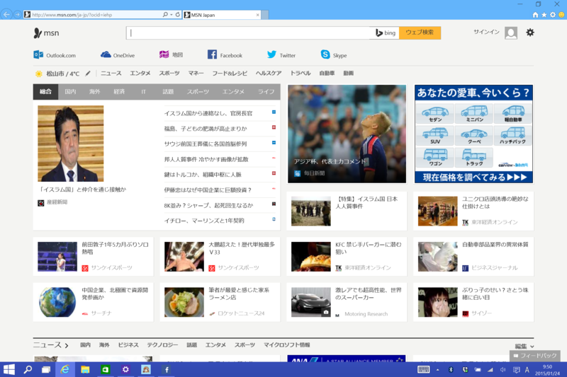
- デスクトップ アプリも Full screen に！
- 画面分割してアプリと並べたりできる
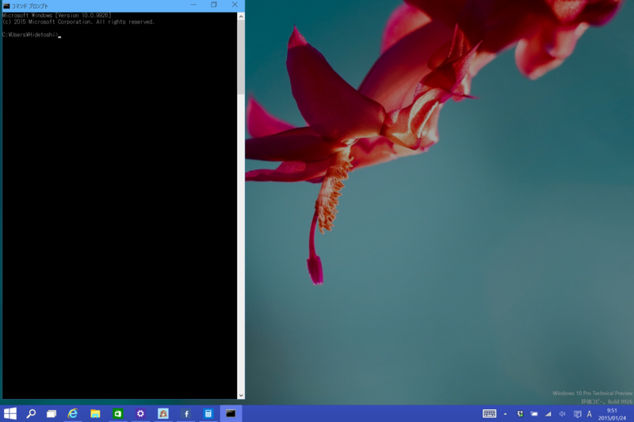
- ただし、コマンドプロンプトなどは除く（笑
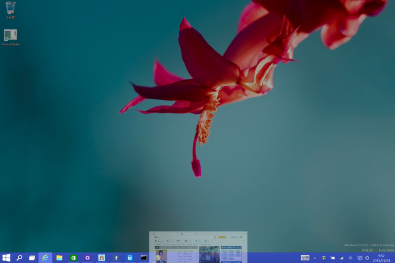
- ストア アプリと同じ操作で閉じられる。操作に一貫性が
- Windows 8 みたいにくるっと回転するまで待たなくてもよくなったのかな？
- ソフトウェアキーボードはテキストボックスにフォーカスが当たると自動表示
再び Tablet mode off
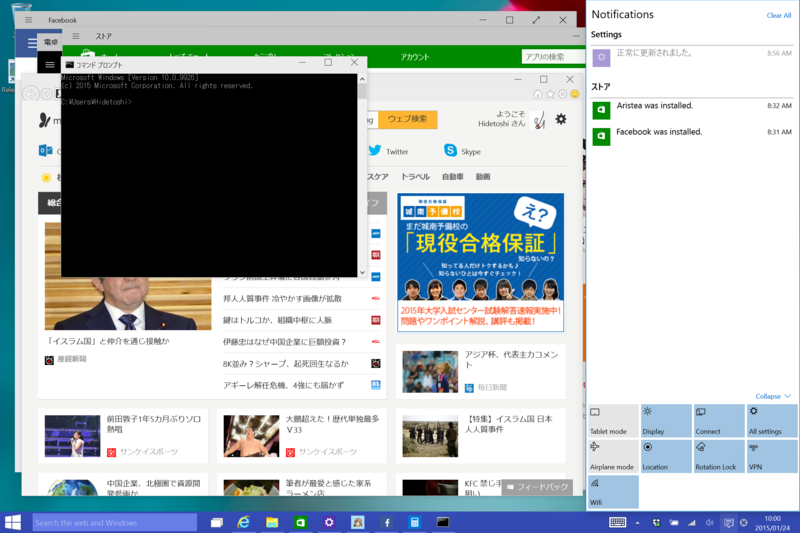
“Windows！”って感じの世界に戻る。
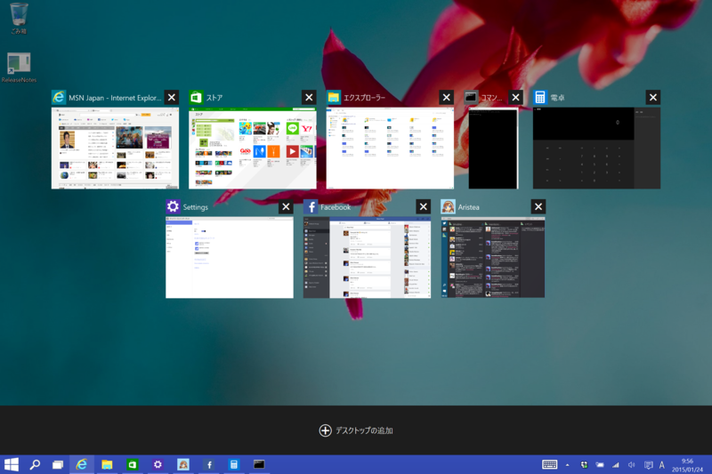
タスクの切り替えでも、ストア アプリとデスクトップ アプリは同等に扱われる。これは前のビルドから一緒だったかも。よく覚えてない。
手持ちの Surface Pro 3 で動作確認。もしかしたらデスクトップとタブレットで動作が違うとか、あるかもしれない。ドキュメントが見つかったら、また更新するかも。
*1:この切り替えは［Settings］画面でも可能